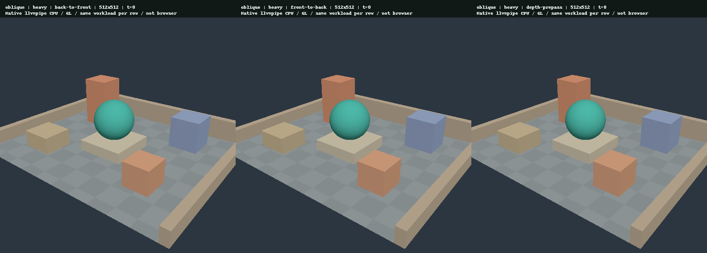
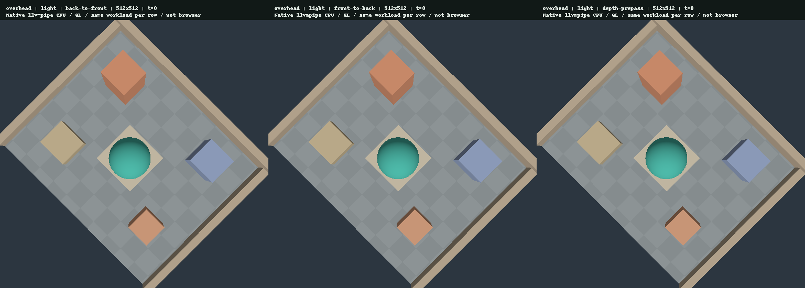
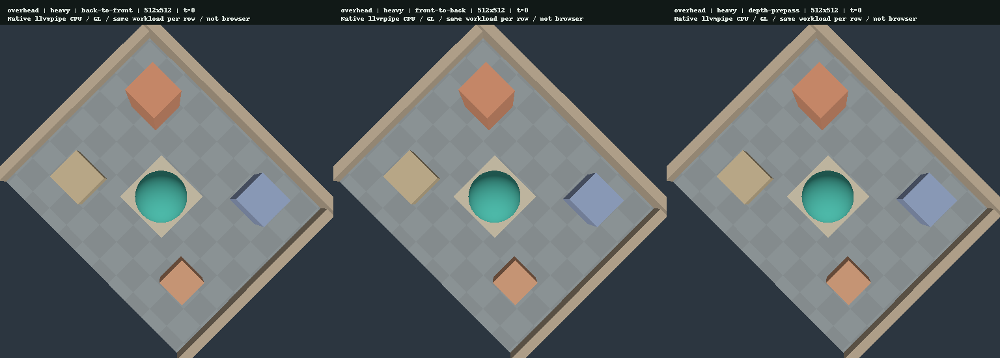

003 · 描画順序と depth prepass
結果の要点
同じ不透明な中庭を、同じ視点・fragment workload・表示512×512・内部512×512（100%）・t=0で描き、back-to-front、front-to-back、depth-prepass の3方式を比較した。2視点×2 workload×3方式の12条件、各3repeat×30sample、計1080点のnative wall timeを記録した。
実行環境はMesa llvmpipeのCPU software rasterizer / GL。以下は各submitの完了を待つ直列実行のwall clockであり、GPU timestamp、fragment invocation数、ブラウザーframe時間、Android実機のGPU性能ではない。方式間で変わるdraw/pass数、CPU・driver overhead、queue待機も含むため、時間差だけからearly-Zの作動や削減量を断定しない。
同じ条件での画像比較
各横並びは左からback-to-front、front-to-back、depth-prepass。lightとheavyは別のfragment shaderで色もわずかに異なるため、画質同等性の比較は同じ視点・同じworkload内だけで行う。PNGはnative offscreen readback由来で、ブラウザーのスクリーンショットではない。
oblique / light
- 個別512×512 PNG: back-to-front / front-to-back / depth-prepass


- front-to-back 対back-to-front: RGB byte-channel MAE=0.000258、変化4/262144 pixels、最大channel差33/255。
- depth-prepass 対back-to-front: RGB byte-channel MAE=0.000000、変化0/262144 pixels、最大channel差0/255。
oblique / heavy

- 個別512×512 PNG: back-to-front / front-to-back / depth-prepass


- front-to-back 対back-to-front: RGB byte-channel MAE=0.000256、変化4/262144 pixels、最大channel差33/255。
- depth-prepass 対back-to-front: RGB byte-channel MAE=0.000000、変化0/262144 pixels、最大channel差0/255。
overhead / light

- 個別512×512 PNG: back-to-front / front-to-back / depth-prepass


- front-to-back 対back-to-front: RGB byte-channel MAE=0.000071、変化1/262144 pixels、最大channel差35/255。
- depth-prepass 対back-to-front: RGB byte-channel MAE=0.000000、変化0/262144 pixels、最大channel差0/255。
overhead / heavy

- 個別512×512 PNG: back-to-front / front-to-back / depth-prepass


- front-to-back 対back-to-front: RGB byte-channel MAE=0.000071、変化1/262144 pixels、最大channel差35/255。
- depth-prepass 対back-to-front: RGB byte-channel MAE=0.000000、変化0/262144 pixels、最大channel差0/255。
今回の差は最大4 pixelsに限られる。交差する面・共有辺付近の深度tieやraster精度による差と整合するが、原因を実機のpixel historyで確定したわけではない。方式をまたぐbit-exact一致は合格条件としていない。固定512×512の回帰許容値はMAE<0.001、変化pixel数≤8、最大channel差≤40。この閾値はこのscene専用で、一般的な知覚品質の保証ではない。全画像平均のMAEは局所差を薄める。
全条件の画像差・差分領域JSONに、PNGの元と同じRGB byte列から再計算した値を保存した。nativeテストは各方式のrepeat間画像一致も検査するが、公開画像はrepeat 0の12枚である。
計測結果
以下は1条件90点をまとめた通常の中央値とnearest-rank p95。括弧内は各repeatの30点中央値の最小〜最大。pooled中央値は3つの中央値の中央値ではなく、90点を直接並べた中央2値の平均である。独立した実機実験90回を意味せず、統計的有意差や信頼区間は推定していない。
oblique / light のnative queue-completion wall
- back-to-front: median 2.170ms、p95 2.513ms （repeat中央値 2.149〜2.221ms、基準）。
- front-to-back: median 2.073ms、p95 2.661ms （repeat中央値 2.022〜2.149ms、基準比-4.5%）。
- depth-prepass: median 2.192ms、p95 3.039ms （repeat中央値 2.090〜2.459ms、基準比+1.0%）。
oblique / heavy のnative queue-completion wall
- back-to-front: median 6.905ms、p95 9.500ms （repeat中央値 6.651〜7.530ms、基準）。
- front-to-back: median 5.630ms、p95 6.957ms （repeat中央値 5.414〜5.801ms、基準比-18.5%）。
- depth-prepass: median 6.087ms、p95 7.630ms （repeat中央値 5.751〜6.509ms、基準比-11.8%）。
overhead / light のnative queue-completion wall
- back-to-front: median 2.300ms、p95 3.210ms （repeat中央値 1.913〜2.549ms、基準）。
- front-to-back: median 2.169ms、p95 2.780ms （repeat中央値 2.031〜2.223ms、基準比-5.7%）。
- depth-prepass: median 2.657ms、p95 3.079ms （repeat中央値 2.646〜2.805ms、基準比+15.5%）。
overhead / heavy のnative queue-completion wall
- back-to-front: median 7.768ms、p95 17.820ms （repeat中央値 7.002〜9.613ms、基準）。
- front-to-back: median 6.454ms、p95 9.098ms （repeat中央値 6.221〜6.684ms、基準比-16.9%）。
- depth-prepass: median 7.526ms、p95 28.840ms （repeat中央値 7.039〜9.381ms、基準比-3.1%）。
この実行の大小関係は上の数値のとおりで、すべての視点・workloadに共通する最適方式を意味しない。特にprepassはscene draw数を10→20、scene pass数を1→2へ増やす。heavyはfragment側の計算を増やした人工負荷なので、時間差があってもoverdrawだけに原因を限定できない。専用GPU・tile-based mobile GPUでは結果が変わり得る。
方法・固定条件
- Adapter:
llvmpipe (LLVM 19.1.7, 256 bits)。Backend:Gl、device type:Cpu。 - Driver:
(adapter API returned an empty driver name)、driver info:4.5 (Core Profile) Mesa 25.0.7-2+deb13u1。 - Rust native test profileはunoptimized + debuginfo。CPU encode/submitの数値にはdebug harnessの影響も含むため、release WebAssemblyのCPU時間に外挿しない。
- 視点oblique: eye [8.2, 6.8, 10.5]。overhead: eye [0.1, 17, 0.1]。両方target [0, 0.6, 0]、world-up [0, 1, 0]。45° perspective、near 0.1、far 100、t=0、viewport 512×512。真上の特異点を避けるためoverheadには微小な横offsetがある。
- 10個のopaque object、同じvertex/index buffers・uniform・viewport・culling。lightは通常のLambert shader。heavyは同じ形状と頂点計算を保ち、補間world position/timeに依存し出力色へ寄与する64回のsin/cos逐次計算をfragmentに追加する。最適化後の命令数やfragment invocation数は測定していない。
- back-to-front / front-to-backはobjectのAABB中心をcamera forwardへ射影したdepthで逆順/正順にsortする。object範囲が重なるため、三角形単位・pixel単位の完全な奥行き順序は保証しない。
- 通常方式はdepth compare Less、depth write有効。depth-prepassはfragment stageなし・color attachmentなしで同じ頂点計算とgeometryを描き、Lessでdepthを書き込む。続くcolor passはそのdepthをLoadし、Equal・depth write無効で同じ順序のgeometryを再描画する。prepassのdraw順はfront-to-back。light/heavy両WGSLのbuiltin vertex positionは@invariantを指定し、別pipelineの同じ頂点計算でdepth一致を維持する。custom WGSLでEqual prepassを使う場合も、両passの一致した頂点処理と@invariant positionが必要。透明物、alpha test、discard、fragment depth出力は扱わない。
- 全方式で内部Rgba8UnormSrgb color + Depth32Floatを使用し、100%でも共通のfullscreen triangle 1draw / 1passで表示へ転送する。linear-light bilinear clamp sampling後、表示のsRGB attachmentへencodeする。scene以外のこの1draw / 1passもwall timeに含む。
- 1条件1scene viewport。warmup 10frameを各repeat/方式の前に実行し、CSVから除外。測定30frame×3repeat。視点はoblique→overhead、workloadはlight→heavy。方式はrepeat 0: BTF→FTF→prepass、repeat 1: FTF→prepass→BTF、repeat 2: prepass→BTF→FTF。順序rotateで固定順序の偏りを軽減するが、ランダム化・CPU負荷・thermal統制はしていない。開発中の再実行でも時間の変動が観察されたため、保存した最終runの大小関係だけで安定した効果とは判断しない。
- 各frameでencode/finish/submit後に当該submissionのqueue完了をblocking waitする。cpu_encode_submit_ms、native_queue_wait_ms、合計native_queue_completion_wall_msを別々に保存する。readback、画像保存、render target/buffer確保、事前のobject sort、shader/pipeline作成は計測外。command encoder作成やsubmit内部のallocationは計測に含み得る。surface presentation、vsync、rAFは含まない。
- native benchmarkは1枚の512×512 sceneと1drawのcomposite pass、初期化時だけのuniform設定、直列queue完了waitを使用する。実際のWeb版は2paneと共有composite pass内の2draw、毎frameのuniform書き込み、surface acquire/present、完了waitなし。scene encoderの共有は描画経路の確認に役立つが、native数値をWeb版A/B同時実行の時間として扱えない。
- hardware GPU timestamp query、pipeline statistics、fragment invocation、overdraw counter、pixel historyは未取得。このreportから実際のfragment削減数やearly-Z効率を算出しない。
- 実行時のsource snapshot SHA256を別途保存する。base commitだけを今回の変更済み実装の検証対象とは扱わない。
再現と検証
native出力は絶対パスで指定する。Python 3.11以上とPillowで画像・集計・本文を再生成できる。相対inputパスはリポジトリルート基準。既存summaryの再利用や架空の計測値補完は行わない。
RENDERING_LAB_OVERDRAW_OUTPUT="$PWD/evidence/overdraw" cargo test --locked -p rendering-core --test overdraw_smoke -- --ignored --nocapture
python3 scripts/build-overdraw-evidence.py --input evidence/overdraw
python3 scripts/build-overdraw-evidence.py --self-test
python3 scripts/build-overdraw-evidence.py --check
python3 scripts/build-reports.py
python3 scripts/build-reports.py --checkgeneratorは12条件・36repeat群・1080点、CSV header、sample順序、重複/欠落、寸法、draw/pass数、有限の非負timingと合計、camera/計測条件、画像寸法・RGB format・MAE・局所差閾値を検証してから出力する。summaryは3つのtimingそれぞれについて通常の中央値とnearest-rank p95を6桁に丸める。--checkは一時領域で再生成し、本文・16 PNG・5 run filesの22ファイルをbyte単位で比較する。別途stampするsource-snapshot.jsonは形式だけ確認し、生成・上書きしない。PNGのbyte再現には同じPillow/zlib環境が必要。
--self-testは一時領域の明示的な人工fixtureだけを使用する。正常入力の再現性と偶数中央値/p95を確認し、欠落・重複・不明条件・不正寸法・draw/pass数・非有限/負timing・合計不一致・順序違い・metadata/image不一致・壊れた出力・余分なファイルを拒否する。人工fixtureを実測reportとして保存しない。
確認済み範囲と次の判断
nativeテストはこの12条件に加え、内部75%/50%でも2視点×2workload×3方式の24 readbackを回帰確認した。追加条件はこの1080点の計測matrixには混ぜておらず、本reportの画像と集計はすべて内部100%だけである。
この証拠が確認するのは共有rendererを使ったnative offscreen描画・許容範囲内の画像差・直列wall-time測定である。WebGPU surface、ブラウザーのA/B同時表示や操作、Android端末での新モード・実機性能はこの実行では確認していない。Issue #4の完了条件は、この固定シーン・native llvmpipe実験の範囲で満たした。実ブラウザー・hardware GPUの検証はIssue #1/#2および今後の追試に残る。depth prepassはheavy workloadでback-to-frontより改善したが、4条件すべてでsorted front-to-backより遅かった。一般的な最適化推奨や実機での高速化保証にはしない。